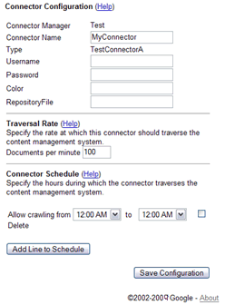

Google Search Appliance software version 6.2
Connector manager version 2.4.0
Posted December 2009
This section describes how to build a debug connector manager and to build Javadoc. This section is useful if you need to extend the functionality of the connector manager, or want to use the test connectors supplied with the connector manager. You may find that the information in the Getting Started section provides enough background information to get you started and to test connectors.
For connector terminology definitions, see the Google Enterprise Glossary.
Chapters: Home, About This Guide, Introduction, Getting Started, SPI Overview, Traversing Documents,
Authentication, Authorization, Configuration, Appendix A: Building a Debug Connector Manager
The sections that follow describe how to set up a development environment for creating a debug connector manager and for building the test connectors.
The connector manager developer site provides the latest download packages for the binary releases as both .zip and .tar.gz files, and the source code archives.
The Source tab lets you browse the source. Use Subversion to download the source.
Download a copy of the source code for the connector manager and SPI:
svn checkout http://google-enterprise-connector-manager.googlecode.com/svn/trunk
google-enterprise-connector-manager
This command anonymously checks out code from the Subversion trunk and copies the code to the google-enterprise-connector-manager folder on your computer. You can specify a different output folder name.
The top-level folder contains the following components:
COPYING file in the google-enterprise-connector-manager folder provides the Apache License for the software distribution.projects folder contains the following folders:
connector-manager
Source code for the connector manager and the SPI. The following folders under the connector-manager folder provide third party production and test libraries:
connector-manager/third-party/prod
Third-party libraries for production use with support for Spring and other technologies for the connector framework.
connector-manager/third-party/tests
Third-party libraries for the debug connector manager.
test-connectorA
Test connector A configuration files.
test-connectorB
Test connector B configuration files. The test connectors are identical except that in their respective configuration forms (in the connectorType.xml files), test connector A displays the Color parameter and test connector B displays the Flavor parameter. Neither parameter has any significance--they are just example values. Both test connectors call a mock repository in the following folder:
/projects/connector-manager/source/javatests/com/google/enterprise/connector/mock
You need to obtain the jcr-10.jar file, which is part of JSR 170.
Google provides a suite of internal JUnit unit tests on the connector manager site to test the functionality of the connector manager. Some of those tests depend on JSR 170.
Ensure that the following required environment variables are set in your build environment.
In Linux, you can use the env command to see if the variables are set.
| Variable | Description | Sample Linux Path |
|---|---|---|
| ANT_HOME | The Ant command's installation folder. | /usr/bin/ant |
| CATALINA_HOME | Apache Tomcat installation folder. | /usr/local/mycompany/apps/apache-tomcat-nnn |
| JAVA_HOME | Java Development Kit installation folder. | /usr/local/buildtools/java/jdk1.nnn |
You can also set the following variables, which the Apache Tomcat startup shell file (startup.sh) uses.
| Variable | Description | Sample Linux Path |
|---|---|---|
| CATALINA_TMPDIR | Apache Tomcat temporary folder. (May point to $CATALINA_HOME.) | /usr/local/mycompany/apps/apache-tomcat-nnn |
| JRE_HOME | Java runtime folder. If you define, set to your Java development kit installation folder. If you do not set, the default is $JAVA_HOME. | /usr/local/buildtools/java/jdk1.nnn |
In Linux, you can use the following statements to assign values to each required variable in the .bashrc file (or a similar shell initialization file):
export ANT_HOME=/usr/bin/ant export CATALINA_HOME=/usr/local/mycompany/apps/apache-tomcat-nnn export JAVA_HOME=/usr/local/buildtools/java/jdk1.nnn
After setting variables, reinitialize your .bashrc file with the source ~/.bashrc command.
The Javadoc for the SPI is available in open source. You can optionally build your own copy of the Javadoc using the procedure that follows.
To build a copy of the SPI Javadoc:
svn checkout http://google-enterprise-connector-manager.googlecode.com/svn/trunk
google-enterprise-connector-manager
projects/connector-manager folder using the following command:
cd google-enterprise-connector-manager/projects/connector-manager
ant spi-javadoc
If the build is successful, the generated Javadoc files appear in the connector-manager/doc/javadoc/2.0.0/spi folder.
spi folder using the following command:
cd doc/javadoc/2.0.0/spi
index.html file to view the Javadocs. The connector framework helps you create a testing (debug) connector manager .war file using Ant and a build.xml file. The debug .war file (connector-manager_debug.war) lets you build the test connectors, enable test connector access to the mock repository, and verify the feature set of the connector manager using unit tests.
Note: The .jar files for the connector manager must be built with Ant.
You can create a debug version that provides support for the test connectors, access to a mock repository, and access to unit tests for verifying the connector manager feature set.
Note: The information that follows enables you to build a debug version of the connector manager. Subsequent sections describe how to use the test connectors and access the mock repository. However, running the JUnit unit tests to verify the functionality of the debug connector manager is outside the scope of this document.
To build a debug version of the connector manager:
distribution/google-enterprise-connector-manager/projects folder.jcr-1.0.jar file to the /projects/connector-manager/third-party/tests folder. junit.jar and ant-junit.jar files in the Ant command's lib folder if they are not already there. ant (without arguments) from the /projects folder.
A successful build ends with the following statements:
$ ant [...many messages...] BUILD SUCCESSFUL Total time: n minute n seconds
If a build is unsuccessful, correct the problems before continuing. If you see messages that package javax.jcr does not exist, ensure that the jcr-1.0.jar file is in the /projects/connector-manager/third-party/tests folder.
Deploy the connector manager's .war file. This action makes the connector manager visible to the Admin Console and provides access to the test connectors in the .war file. If you have not done so already, install Apache Tomcat but do not start it. If you have just installed Apache Tomcat, skip to Step 2 of the following procedure.
To run and test the connector manager:
$CATALINA_HOME/shutdown.sh
command and wait 30 seconds to ensure that the Tomcat service ends.
You can check that the service stops by entering this URL: http://127.0.0.1:8080. If the page display server not found, the service has stopped.$CATALINA_HOME/webapps folder and delete any previous connector-manager.war files or connector-manager/ folders..war file to the Tomcat webapps folder.
Copy and rename the connector-manager_debug.war file from the connector manager's projects/connector-manager/dist/connector-manager/ folder to the $CATALINA_HOME/webapps folder:
cp /projects/connector-manager/dist/connector-manager/connector-manager_debug.war
$CATALINA_HOME/webapps/connector-manager.war
$CATALINA_HOME/bin/startup.sh command:
$ $CATALINA_HOME/bin/startup.sh Using CATALINA_BASE: /usr/local/mycompany/apps/apache-tomcat-nnn Using CATALINA_HOME: /usr/local/mycompany/apps/apache-tomcat-nnn Using CATALINA_TMPDIR: /usr/local/mycompany/apps/apache-tomcat-nnn/temp Using JRE_HOME: /usr/local/buildtools/java/jdk1.nnn
If Tomcat is online, the Apache Tomcat page appears. If Tomcat is offline, the page displays that the connection was reset.
After creating the connector manager, you can configure the test connector at the Admin Console.
The location has the following format: http://machine_name:8080/folderpath/
The folderpath is the fully qualified root of the web application. The folderpath can be a folder, such as the default, connector-manager, for example, http://me:8080/connector-manager. On the local computer, the folderpath could be http://localhost:8080/connector-manager/.
The folderpath depends on the name you provide for the .war file. For example, if you name a .war file example.war on the me server, the location folderpath would be http://me:8080/example/.
The folderpath can also reference a proxy server depending on how you configure your servlet container, for example, http://me:8080/proxy/connector-manager/. In addition, the http: part of the location can be https: and use SSL.
The following figure shows the prompts for registering the new Test_CM connector manager on the me server. The Manager name field cannot contain the <>&'" characters.
^googleconnector://
Note: If this crawl pattern is not present, the search appliance rejects documents from a content feed connector. Metadata-and-URL connectors do not require the use of the googleconnector crawl pattern.
Alternatively, you can list the IP address of the server where Apache Tomcat is installed in the Only trust feeds from these IP addresses field. Click Save Settings.
TestConnectorA and TestConnectorB provide a way to verify that you have installed the connector framework distribution correctly. The instructions that follow are for TestConnectorA--you can use the same instructions for TestConnectorB.
To test TestConnectorA:
connector-manager_debug.war file to the Apache Tomcat webapps folder and rename the file to be connector-manager.war:
cp projects/connector-manager/dist/connector-manager/connector-manager_debug.war
$CATALINA_HOME/webapps/connector-manager.war
http://localhost:8080/manager/html/list --du/p:tomcat/tomcat
The following figure shows the TestConnectorA configuration form for the "Test" connector manager:

RepositoryFile field, enter the name of a text file to crawl, for example, MockRepositoryEventLog1.txt. (The mock repository event log files are in the Tomcat webapps/connector-manager/WEB-INF folder.)You can use timestamp as a keyword to search the MockRepositoryEventLog1.txt file.
Wait a few minutes and the search appliance starts indexing feeds from the connector. When a feed on the status page appears with the Completed status, the documents in the feed appear in the search results.
Note: You can ignore the Documents Included column on the Feeds page. A "1" in this column means only that the search appliance added documents for normal operation.
Previous Chapter: Configuration